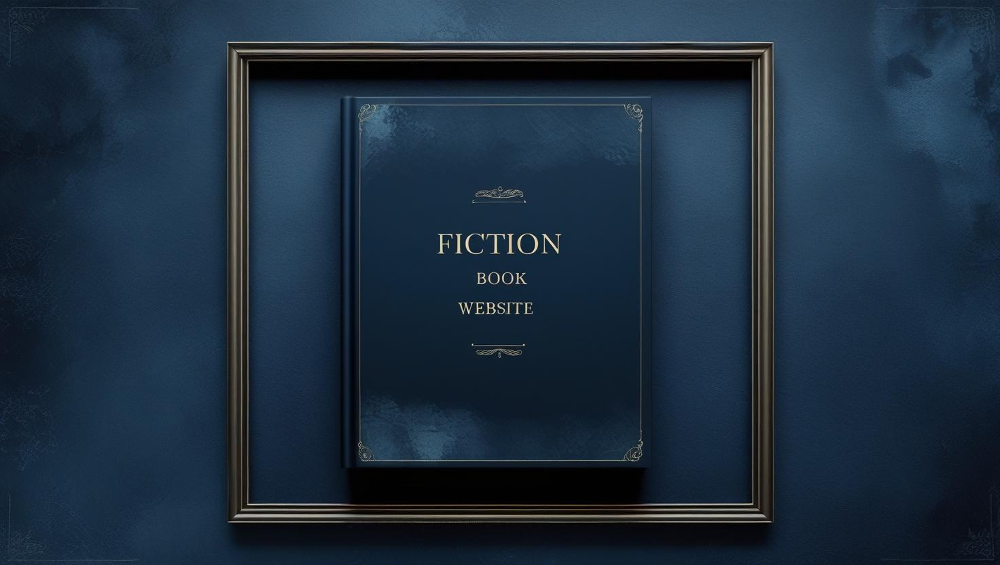

About My Love for Fiction
Fiction has always been my escape, my adventure, and my most trusted companion. Ever since I was a child, I’ve been enchanted by the way stories can whisk me away from the ordinary and into extraordinary worlds—places where magic feels real, heroes rise from the unlikeliest corners, and every page holds the thrill of the unknown. Through these journeys, I’ve met characters who feel like old friends, faced challenges that taught me courage, and found comfort in knowing that even in the wildest tales, there’s always a spark of truth about what it means to be human. For me, fiction isn’t just entertainment—it’s a sanctuary, a source of wonder, and a reminder that imagination can make the world feel limitless.
Why I Love Fiction:
- It allows me to step into lives far beyond my own, deepening my empathy and understanding.
- Every story feels like a balance of joy and discovery, leaving thoughts that linger long after the last page.
- The community of readers and dreamers enriches every story through shared experiences.
- The feeling of losing myself in a world of words is a joy I’ll never replace.
- The best stories stay with me, shaping how I think, feel, and dream.
My Recent Reading Stats
| Year | Books Read | Favorite Book |
|---|---|---|
| 2024 | 14 | Twilight |
| 2023 | 10 | Lela Sew |
| 2022 | 15 | Fikir eske Mekabir |
Over the past few years, my reading journey has been a mix of exploring timeless classics and discovering new favorites. Each year feels different—some are filled with whimsical adventures, others with profound reflections. Here’s a glimpse: